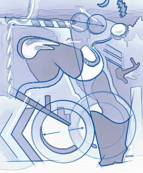

Majorette Deconstruction
A retrospective examination of the inadvertent progression, or regression, of a visual idea.
- - - - - - - - - -
by Rob Landeros
 UMMAGING through some boxes containing sketches, photos and prints of my old work, I came across a few pieces that illustrate a lineage of a visual idea over time. The transformation was from the literal to the abstract. It came as a sort of surprise to me because I am not entirely sure that there was a conscious intent to go from one work to the other and arrive at a particular place with a definitive goal. Often, growth, change and transition are not apparent at the time they are actually happening and it is only in hindsight, with the advantage of compressed time that they become so, like watching time lapse photography of a flower blooming... or flesh rotting. UMMAGING through some boxes containing sketches, photos and prints of my old work, I came across a few pieces that illustrate a lineage of a visual idea over time. The transformation was from the literal to the abstract. It came as a sort of surprise to me because I am not entirely sure that there was a conscious intent to go from one work to the other and arrive at a particular place with a definitive goal. Often, growth, change and transition are not apparent at the time they are actually happening and it is only in hindsight, with the advantage of compressed time that they become so, like watching time lapse photography of a flower blooming... or flesh rotting.
Normally I would not indulge in the investigation and sharing of the process with the audience, running the risk of boring them entirely, but I briefly document the metamorphasis of this one work in the off-chance that it might be of some small interest to those who, like myself, enjoy a decent behind-the-scenes story and who often find the creative processes of others as fascinating - and even more so - as the finished works themselves.
Although there may have been a predecessor or two, the basic idea showed up in a simple little graphite pencil sketch on paper. The drawing explored the exaggerated bending, stretching and flexing of the various parts and joints of the female form.accentuating the arching of the back and the bend and extension of the arms and legs. A happy result is the upper torso being in a near horizontal position thus elevating the breasts with nipples pointed toward the heavens.
It wasn't until some months later that it occurred to me that the pose was very suggestive of that of a majorette leading a marching band down main street and that I should probably explore that idea. I focused attention on the torso area and emphasized line and direction of legs and baton. I then sent a pencil sketch to the infamous Screw magazine as a possible cover illustration and they gave me the go-ahead. This was the second cover I had done for the magazine, the first being Clown Girl and Fireman.
The most notable and challenging aspects of doing the two covers were the constrictions within which I was forced to work, being allowed only black plus two colors. In both cases, since flesh color was required, I chose process red and blue. The color separations had to be done by hand which meant that essentially three drawings had to be made in black and shades of gray using stencil-cut halftone screens, the black plate being essentially the main cartoon image with the other two representing various shades of red and blue respectively. For this illustration, instead of using the traditional halftone screens for the grayscale areas of color, I airbrushed black ink onto acetate film, hence the graduated color areas. This fact is not so impressive today, but at the time the technique was fairly innovative and possibly unique.
A year later I took the idea to acrylic paint and canvas. In this variation, I decided to concentrate more on themes, patterns and dynamics, relegating figurative representation to a secondary concern. Finding and exploring one element led to more and repeating elements. The exercise became a game of finding the hidden and related visual themes and giving them context through repetition and association.
I don't recall which ideas came first and how they led to others, but looking at it now I see that the most recurring pattern is the chevron. This would be a common design to be found on the pseudo-military costuming traditionally worn by majorettes. The symbol appears in full form in the lower left portion of the canvas, forming the letter 'K' before the double 'OO's that are locomotive wheels to the piston legs, and then the hint of the letter 'L'. The modified chevron next appears logically as military insignia "hash marks" on the invisible sleeve above the disembodied hand poised in the air like a bird in flight. The hand delicately holds a cigarette. The rhomboidal shapes repeat in the left boot, the epaulet braids, the baton and even in the stylized lightning bolt that also doubles as a blond ducktail hairdo. The adjacent crescent moon is meant to be interpreted as a visor.
The marks are suggestive of the double yellow lines of a highway. The left kneecap is modeled on the hood and fender of a car and is actually airbrushed on with auto lacquer. Indeed, the skyline is inspired by the smoggy yellow-orange sunsets of car-ridden Los Angeles. On the left, the silhouette of the arm forms the hills surrounding the LA basin while on the right, the shape of cigarettes pushed up out of the pack mimicks the city skyline. That skyline reference is repeated in the decorative design on her boot.
Cigarettes, cars, highways, LA, smog, smoke, marching majorettes and the military. I don't know if there is a statement being made here. I am not necessarily against any of these things, and it may all amount to a hill of meaningless beans. What I can tell you is that this painting was done while I was living in one of the smoggiest areas east of LA during the 70s just prior to making my great escape to the Northwest via I-5.
I smoked Kools at the time.

|